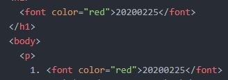

그냥
보여주기
위한
목차지롱
2. 목차 글씨색 바꾸기 강의를 보시려면
여기
를 눌러주세요.
2-1. 강의 포인트 :
스타일에 a를 사용한 이유는 위처럼 하나하나 바꿔줄 수 있지만 같은 분류끼리 중복을 피해 묶어주기 위함이다.
2-2. 코드 이미지
(
CSS 1/10
과 현재 화면의 목차 코드)

라이브리 댓글 작성을 위해 JavaScript를 활성화 해주세요